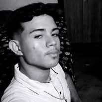

Meu nome é Rafael Ferreira da Silva, nasci em Limoeiro do Norte e tenho 17 anos. Com os meus 6 anos decidi morar com o meu pai, desde ja, continuo morando com ele. Estudei nas escolas: Joaquim Simplicio da Costa, José ricardo de Matos e atualmente Jeová Costa lima. Estou cursando informatica e pretendo seguir na area da TI ou da engenharia civil. Dês de pequeno fui muito proximo da tecnologia, tendo meu primeiro computador com meus 12 anos, tive acesso a muitos jogos e foi ai que comecei a programar pela a primeira vez, em um jogo chamado Roblox na ferramenta Roblox Studio, dai começou minha paixão por programação e logica. Atualmente estudo incansavelmente em busca de passar no Instituto de Tecnologica da Aeronautica (ITA). Se eu passar no ITA, pretendo continuar estudando muito, abrir uma empresa de ensino ou trabalhar na area da engenharia.